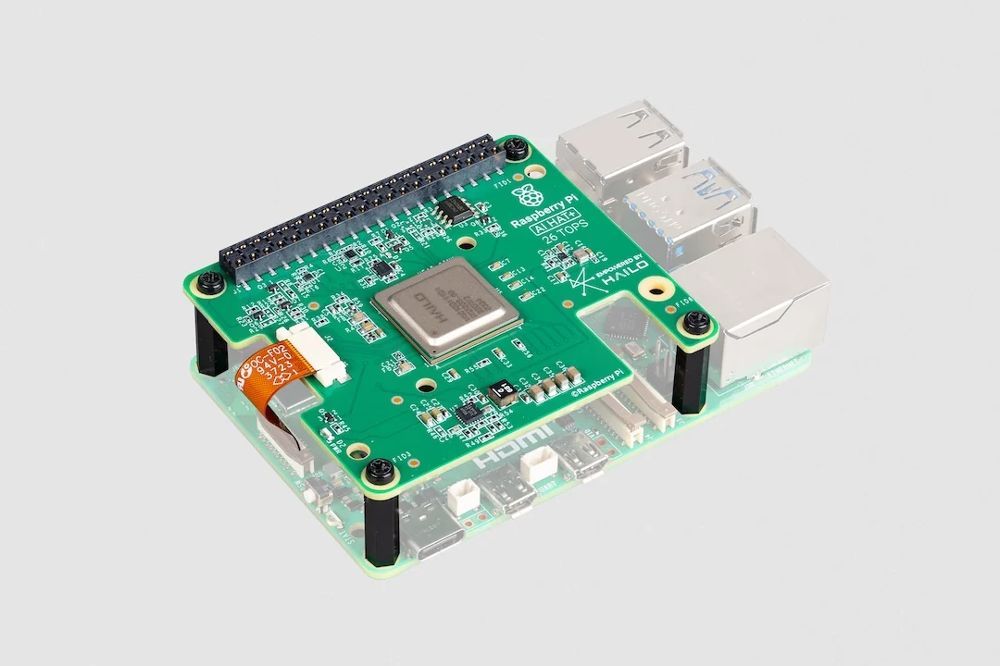

Proyecto final 2026 · HDI2000
Detección inteligente de amenazas digitales
Un proyecto del ITSE que conecta el análisis de datos con la ciberseguridad para entender cómo se detectan y se revisan las amenazas digitales.


Explora el proyecto
Ciberseguridad e IA
Conoce las amenazas, cómo se detectan y qué papel cumplen las alertas automatizadas.
Explorar el tema
Laboratorio de detección
Analiza ocho casos ficticios y aprende a reconocer sus señales de riesgo.
Probar los casosPortafolio académico
Conoce al equipo del ITSE, sus habilidades digitales y sus evidencias aprobadas.
Ver el portafolioFoto del Raspberry Pi 400 por Raspberry Pi · CC BY-SA 4.0 · recorte y conversión a WebP

¿Cuándo un pico de actividad merece una alerta?
Un grupo de accesos fallidos puede aparecer por un error cotidiano o por un intento de entrar en una cuenta ajena. Comparar el cambio con el comportamiento habitual ayuda a decidir qué revisar.
- Reunir registros. Agrupar eventos de acceso y ordenar sus fechas.
- Detectar un cambio. Comparar el volumen reciente con el patrón habitual.
- Verificar el contexto. Revisar a qué cuentas afectó y si coincide con un fallo conocido.

Aprende a leer las señales de un mensaje
Un remitente que imita una dirección conocida, un adjunto inesperado o una petición de códigos son motivos para detenerse y verificar.
En el laboratorio, elige un caso ficticio, marca las señales que encuentres y compara tu lectura con la explicación.
Empezar el análisisDe la señal a la decisión
- ObservaRevisa quién envía el mensaje y qué intenta que hagas.
- VerificaConfirma los datos en la aplicación o el sitio oficial.
- ActúaSi la solicitud es sospechosa, repórtala antes de interactuar.
Comentarios sobre el proyecto
Comparte sugerencias o reporta un error en GitHub. Los comentarios son públicos, así que evita incluir datos personales.